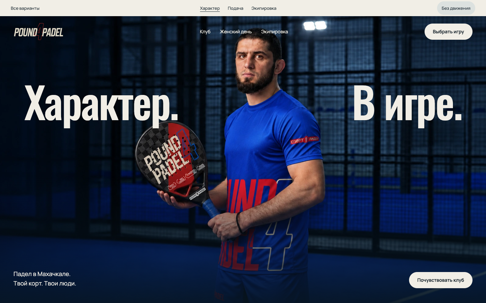
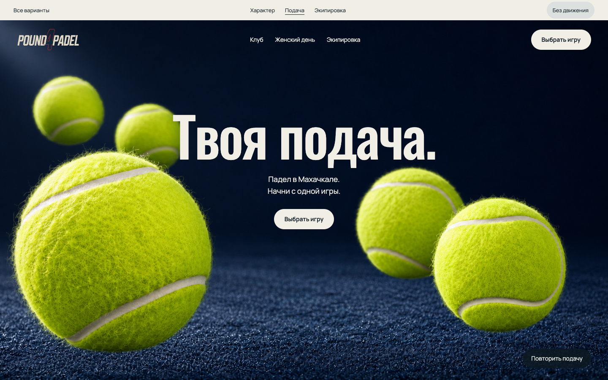
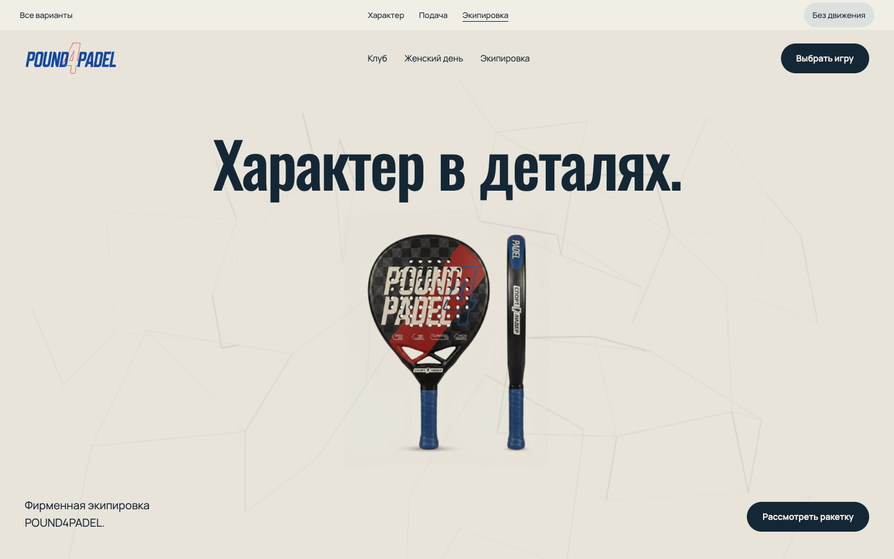

Три способа
почувствовать игру.
Открой вариант и прокрути страницу. В каждом можно отключить движение и сравнить ощущения.

Характер
Знакомый первый экран. Плавная прокрутка и раскрытие фотографии клуба.
Lenis + GSAP · рекомендую начать здесь
Подача
Мячи в движении. Более выразительное знакомство с клубом.
Lenis + GSAP
Экипировка
Ракетка в центре. Интерактивная сетка и смена цвета формы.
Lenis + GSAP + Vanta · экспериментЧто взял из референсов
MotionSites: у Outfit Carousel и Runway Lookbook - предмет в центре и осмысленное переключение вариантов. Здесь это ракетка и два цвета формы.
Navbar Gallery: у Supaste - компактная навигация и выделенное главное действие. Здесь сохраняем логотип и прямой переход к выбору игры.
60fps: изучена открытая подборка движения; используем короткую согласованную сцену вместо анимации каждого блока.
CTA Gallery просмотрена, но всплывающие предложения и подписки для этих вариантов не понадобились. Остальные каталоги оставлены для соответствующих задач.